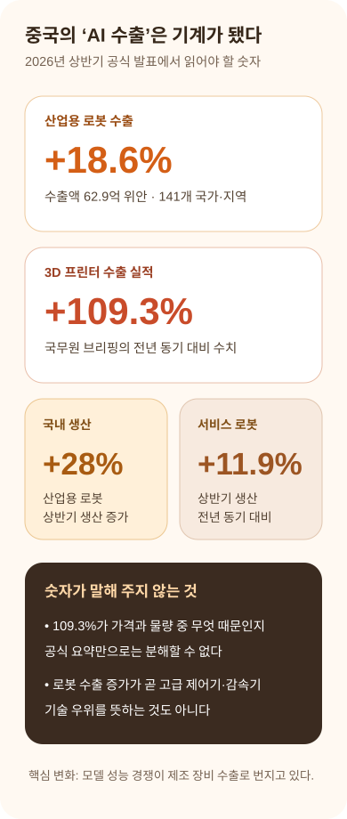
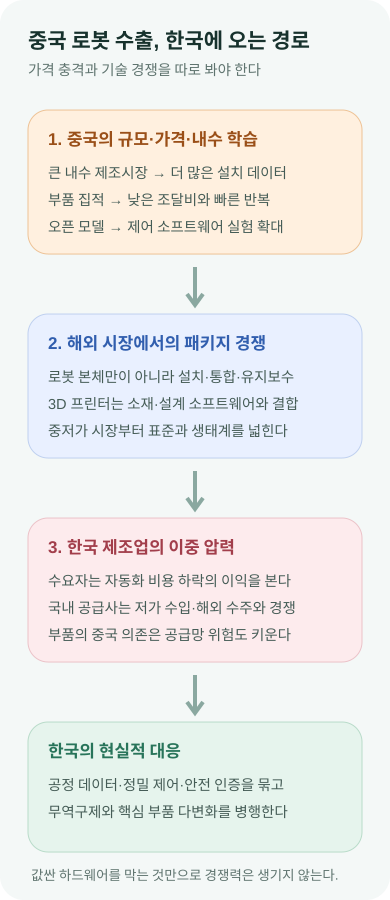

중국의 AI 수출, 이제 모델이 아니라 기계로 번진다
중국 정부가 산업용 로봇과 3D 프린터를 ‘AI 관련 제품’이자 새로운 수출 명함으로 묶었다. 2026년 상반기 산업용 로봇 수출은 18.6%, 3D 프린터 수출 실적은 109.3% 늘었다. 중요한 변화는 숫자 하나가 아니라, 중국의 AI 전략이 값싼 모델을 넘어 공장 안에서 움직이는 장비와 생산 방식의 수출로 확장됐다는 점이다.
AI Moves Into Machines
중국은 토큰보다 자동화 패키지를 팔기 시작했다
로봇 본체, 제어 소프트웨어, 공정 통합, 유지보수, 3D 설계와 소재까지 한 묶음으로 수출되면 경쟁의 기준은 모델 벤치마크가 아니라 설치 가격, 가동률, 현장 데이터, 서비스망으로 이동한다. 한국 제조업은 자동화 비용 하락의 수혜자이면서 국내 공급 기반이 압박받는 당사자다.
신화통신이 전한 7월 28일 국무원 신문판공실 브리핑에서 중국 상무부는 상반기 산업용 로봇과 3D 프린터 수출이 전년 동기보다 각각 18.6%, 109.3% 증가했다고 밝혔다. 발표자는 두 품목을 ‘인공지능 관련 제품’으로 부르며 중국 대외무역의 새 명함이라고 평가했다.
산업용 로봇은 금액과 시장 범위가 더 구체적으로 공개돼 있다. 중국 해관총서 자료를 인용한 상반기 통계에 따르면 수출액은 62억9천만 위안이었고, 141개 국가와 지역으로 나갔다. 2025년에는 연간 수출이 수입을 처음 넘어 중국이 산업용 로봇 순수출국이 됐다고 당국은 설명했다.
3D 프린터의 109.3%는 더 조심해서 읽어야 한다. 7월 28일 공식 요약은 비교 기준이 수출액인지, 특정 세부 품목의 수량인지 충분히 풀어 쓰지 않았다. 별도 통계의 프린터 대수 증가율과 섞거나, 가격과 물량이 모두 두 배가 됐다고 단정하면 안 된다.
따라서 이 기사에서는 109.3%를 브리핑이 제시한 ‘수출 실적 증가율’로만 다룬다. 제품 단가 상승, 고급 장비 비중, 물량, 환율을 분해한 해관 품목표가 공개되기 전에는 성장의 질을 확정할 수 없다. 강한 숫자일수록 분모와 단위를 먼저 확인해야 한다.

수출 숫자 뒤에는 제조 생태계가 있다
생산 쪽 지표도 같은 방향을 가리킨다. 중국 공업정보화부의 상반기 발표에 따르면 산업용 로봇 생산은 28%, 서비스 로봇 생산은 11.9% 증가했다. 장비 제조업의 수출 납품액은 18.2% 늘어 전체 산업 수출 증가분의 거의 절반을 기여했다.
로봇만 튀어나온 현상도 아니다. AP는 7월 중국 해관 브리핑을 인용해 전자부품, 컴퓨터 부품 등 AI 관련 교역이 상반기 약 5조1천억 위안으로 전년 동기보다 거의 57% 증가했다고 보도했다. 중국의 6월 전체 수출도 전년보다 27% 늘었다.
여기서 ‘AI 관련’이라는 정부 분류가 넓어지고 있다는 점이 중요하다. 이전에는 GPU, 서버, 데이터센터, 대형 모델이 AI 경제의 중심처럼 보였다. 이제 중국은 산업용 로봇, 3D 프린터, 자동화 장비, 전자부품을 한 흐름에 넣어 AI가 물리적 생산성과 수출 경쟁력으로 이어진다고 주장한다.
이 전략은 중국이 강한 곳과 맞닿아 있다. 거대한 제조 내수시장, 촘촘한 부품 공급망, 빠른 시제품 제작, 낮은 단가, 지역별 산업단지는 로봇과 3D 프린터의 반복 속도를 높인다. 모델이 완벽하지 않아도 공정이 구조화돼 있고 작업 범위가 좁으면 상업적 가치를 만들 수 있다.
오픈웨이트 AI도 하드웨어 수출을 돕는 보조축이다. 중국 기업과 고객은 모델 가중치와 추론 스택을 현장 데이터에 맞춰 조정하고, 로봇 제어·비전 검사·예지 정비·설계 자동화에 붙일 수 있다. 폐쇄형 API 비용을 매번 지불하지 않는 구조는 대량 설치와 낮은 가격을 앞세우는 산업 정책에 잘 맞는다.
하지만 ‘AI 모델이 좋다’와 ‘산업용 로봇이 안정적으로 돈을 번다’는 같은 문장이 아니다. 공장 로봇은 정밀도, 반복성, 안전 인증, 감속기와 서보모터 수명, 고장 대응, 시스템 통합 능력으로 평가된다. 대형 모델의 코딩 점수나 데모 영상이 생산라인 가동률을 대신할 수 없다.
2026년 공개된 중국 산업용 로봇 수출 연구의 초안도 중국 제품이 일본·독일·미국·한국 제품보다 기술적으로 덜 앞선 경우가 있지만 가격 대비 성능이 강하다고 평가한다. 아직 동료평가를 거치지 않은 연구이므로 결론을 확정할 수는 없지만, 지금 수출 경쟁의 핵심이 최고 사양보다 ‘충분한 성능을 낮은 가격에’ 제공하는 데 있다는 가설을 뒷받침한다.
3D 프린터는 소비자용 장비와 산업용 적층제조 장비를 구분해야 한다. 데스크톱 프린터가 많이 팔리는 것과 항공·의료·금속 부품을 인증된 공정으로 생산하는 것은 완전히 다른 시장이다. 109.3%라는 묶음 수치만으로 중국이 모든 적층제조 기술에서 우위를 확보했다고 말할 수 없다.
설치 기반이 서비스 시장을 넓힌다
반대로 이 숫자를 단순 저가품 물량으로만 축소해서도 안 된다. 프린터가 해외에 깔리면 전용 소재, 슬라이서 소프트웨어, 설계 파일 생태계, 원격 유지보수, 사용자 커뮤니티가 따라간다. 낮은 가격은 시장 진입 수단이고, 설치 기반은 이후 소프트웨어와 서비스 수익의 통로가 된다.

한국에는 값싼 자동화와 공급망 압력이 함께 온다
한국은 이 변화의 수혜자이자 경쟁자다. 제조업의 로봇 밀도가 높고 자동차·전자·배터리·조선 공정에 자동화 경험이 깊어, 더 싼 장비는 중소 제조사의 도입 비용을 낮출 수 있다. 미국 상무부의 한국 로봇 시장 자료는 한국이 제조업 근로자 1만 명당 1,012대의 로봇을 보유해 세계 최고 수준이라고 정리한다.
그러나 국내 로봇 공급사는 같은 가격 하락을 압박으로 받는다. 한국 무역위원회는 올해 3월 일본·중국산 수직 다관절 산업용 로봇에 대한 덤핑방지관세 부과를 건의했다. 저가 수입이 국내 산업에 실질적 피해를 줬다는 판단이 이미 정책으로 나타난 것이다.
무역구제만으로 장기 경쟁력이 생기지는 않는다. 중국 장비가 싸고 설치가 빨라지는 동안 한국 업체가 같은 본체 가격만 지키려 하면 수요 기업은 해외 솔루션으로 이동할 수 있다. 정밀 공정, 안전성, 가동률 보장, 고객 맞춤 통합, 고장 예측, 데이터 보안처럼 총소유비용을 낮추는 영역에서 차이를 증명해야 한다.
공급망의 역설도 있다. 한국무역협회 자료를 인용한 보도에 따르면 한국의 로봇 모터용 영구자석 수입 중 88.8%가 중국에 의존했다. 완제품 수입을 견제하면서 핵심 소재와 부품은 중국에 기대는 구조라면 비용과 안보를 동시에 관리하기 어렵다.
한국이 강점을 가질 수 있는 곳은 공정 데이터다. 반도체, 배터리, 자동차, 조선, 물류 현장의 숙련 작업을 안전하게 수집하고 로봇 학습에 연결하면 범용 하드웨어 위에 한국형 물리 AI를 얹을 수 있다. AP가 보도한 한국 스타트업 RLWRLD 사례처럼 숙련자의 동작과 판단을 데이터로 만드는 시도가 중요한 이유다.
개발자에게는 모델 선택보다 시스템 경계가 더 중요해진다. 비전 모델이 불량을 놓쳤을 때 누가 라인을 멈추는지, 로봇 에이전트가 명령 범위를 벗어나면 어떤 안전 제어기가 차단하는지, 원격 업데이트가 실패하면 어떻게 이전 버전으로 돌아가는지까지 설계해야 한다. 물리 AI는 잘못된 답변이 아니라 실제 장비의 움직임으로 오류가 나타난다.
구매 기업은 싸다는 이유만으로 도입해서도, 중국산이라는 이유만으로 배제해서도 안 된다. 초기 가격, 설치 공사, 통합 비용, 가동률, 부품 조달, 보안 업데이트, 유지보수 응답시간, 데이터 국외 이전, 5년 뒤 공급자 생존 가능성을 같은 견적서에 넣어 비교해야 한다.
앞으로 확인할 첫 번째 지표는 해관의 세부 품목표다. 3D 프린터 109.3%가 수량, 금액, 고급 장비 믹스 중 어디에서 왔는지 확인돼야 한다. 산업용 로봇도 국가별 수출액과 평균 단가, 수직 다관절·협동로봇·특수로봇 비중을 봐야 한다.
두 번째는 서비스 수익이다. 해외 설치 대수가 늘어도 유지보수망과 소프트웨어 구독이 붙지 않으면 저마진 하드웨어 수출에 머물 수 있다. 중국 업체가 현지 통합 파트너, 교육센터, 부품 창고를 얼마나 빠르게 구축하는지가 지속성을 가를 것이다.
또 하나 봐야 할 지표는 제품책임과 사이버보안 비용이다. 해외 공장에 연결된 로봇과 프린터가 원격 업데이트를 받으면 취약점 공개, 패치 기한, 로그 보존, 부품 단종 뒤 지원 기간이 계약 경쟁력으로 바뀐다. 수출 대수는 빠르게 늘어도 현지 규제에 맞춘 보안 인증과 사고 대응망을 갖추지 못하면 판매 증가가 보증충당금과 리콜 비용으로 되돌아올 수 있다.
다음 숫자는 수출액보다 운영에서 나와야 한다
세 번째는 핵심 부품 자립도와 무역분쟁이다. 감속기, 서보모터, 제어기, 센서, 고정밀 베어링의 국산화율과 수입 단가를 봐야 한다. 동시에 한국과 유럽, 미국이 덤핑·보조금·보안 기준으로 어떤 장벽을 세우는지도 수출 속도에 직접 영향을 준다.
내 결론은 이렇다. 중국의 이번 발표는 “AI 모델이 미국을 이겼다”는 선언이 아니다. 모델과 전자부품, 로봇, 3D 프린터, 제조 서비스가 한 수출 체계로 연결되기 시작했다는 신호다. AI 경쟁의 결과가 공장 바닥에서 가격표와 가동률로 측정되는 단계에 들어왔다.
한국은 로봇을 많이 쓰는 나라에서 로봇과 공정 지능을 함께 파는 나라로 넘어가야 한다. 값싼 장비를 막는 방어, 핵심 부품 의존을 줄이는 공급망 전략, 숙련 데이터와 안전 소프트웨어를 상품화하는 공격 전략이 동시에 필요하다. 중국의 18.6%와 109.3%는 그 전환을 서두르라는 숫자다.
출처와 더 읽을 자료
- Xinhua: AI 관련 제품이 중국 대외무역의 새 명함
- CGTN: Chinese industrial robot exports accelerate in H1 2026
- SCIO: China’s equipment manufacturing drives export growth in H1
- AP: China’s June exports surge as AI demand grows
- SCIO/Xinhua: Created-by-China wins global consumers
- SSRN: Exporting Automation, Not Just Goods
- 산업통상부: 일본·중국산 산업용 로봇 덤핑방지관세 부과 건의
- The Korea Times: Korea’s robotics supply-chain vulnerability
- AP: South Korean startup captures workers’ techniques for robot AI
- U.S. Trade Administration: South Korea robotics industry